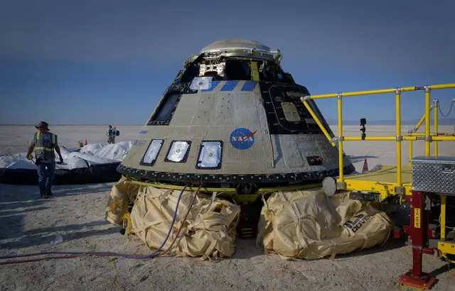

ISS : Le premier vol habité de Starliner, la capsule de Boeing, aura lieu en février 2023

Le premier vol habité de Starliner, la capsule spatiale de Boeing, aura lieu en février 2023. Le projet est mené conjointement par l’entreprise américaine et la Nasa, qui souhaite établir un deuxième moyen de transport vers la Station spatiale internationale ( ISS). Depuis 2020, les astronautes voyagent en effet jusqu’à l’ISS à bord de vaisseaux SpaceX, mais l’agence spatiale américaine veut diversifier ses options. Une série de déboires, notamment un vol raté en 2019, a retardé le programme de Boeing. L’entreprise a finalement réussi en mai 2022 à atteindre l’ISS pour la première fois – sans équipage à bord.
Boeing doit désormais réaliser un second vol, cette fois habité, avant de recevoir l’homologation de la Nasa pour commencer les missions régulières. Le vol test qui aura lieu en février 2023, appelé CFT (Crew Flight Test), transportera deux astronautes de la Nasa, Barry Wilmore et Sunita Williams. Ils resteront environ huit jours dans l’ISS, où ils participeront aux recherches menées dans le laboratoire volant. Boeing espérait encore récemment pouvoir réaliser ce vol test en 2022. Mais des accrocs lors du test à vide ont nécessité des ajustements sur le véhicule. Un souci avait notamment été détecté dans le système de propulsion : deux propulseurs utilisés par la capsule pour se placer sur la bonne trajectoire après le décollage n’avaient pas fonctionné.
Les équipes de Boeing ont déterminé que le problème avait été provoqué par des « débris », sans pouvoir identifier avec certitude d’où ces derniers venaient. Le vaisseau a été vérifié pour s’assurer que ces débris ne venaient pas de lui. Des filtres ont par ailleurs été enlevés pour régler un problème de pression, et un logiciel a dû être mis à jour pour éviter un flux trop important de données.
28/08/22 à 14h05